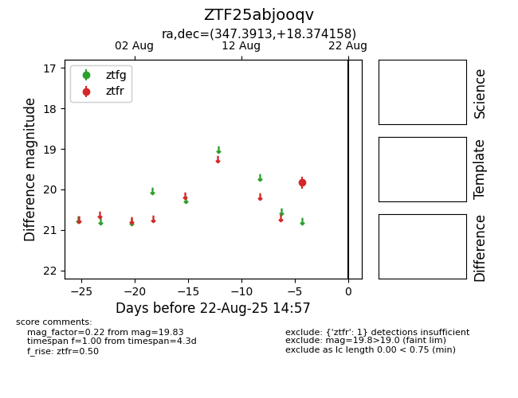

Target ZTF25abjooqv at 2025-08-22 15:36, see:
FINK: fink-portal.org/ZTF25abjooqv
Lasair: lasair-ztf.lsst.ac.uk/objects/ZTF25abjooqv
ALeRCE: alerce.online/object/ZTF25abjooqv
alt names
ZTF25abjooqv (ztf,alerce)
coordinates:
equatorial (ra, dec) = (347.3913,+18.37416)
galactic (l, b) = (91.6335,-38.22878)
photometry
last ztfr=19.83
1 ztfr detections
